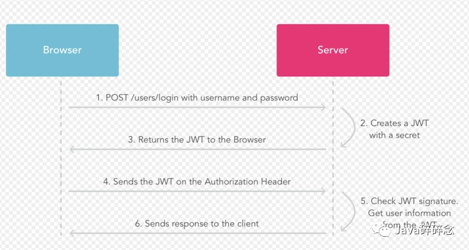
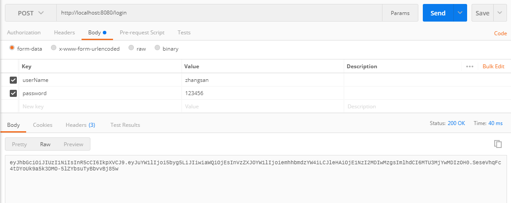
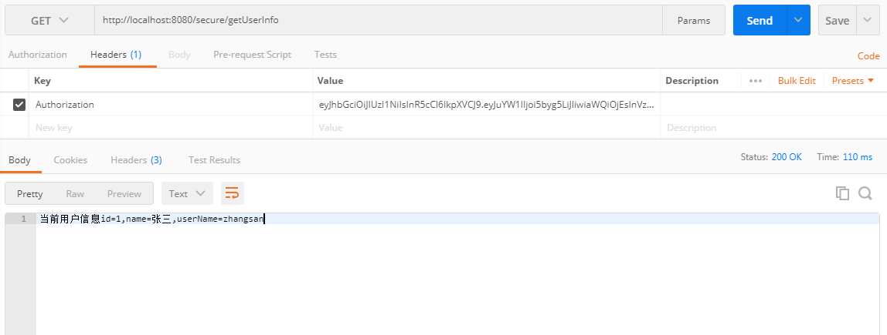

原文连接:https://www.cnblogs.com/haha12/p/11818095.html
上一篇文章《一分钟带你了解JWT认证！》介绍了JWT的组成和认证原理，本文将介绍下SpringBoot整合JWT实现认证的过程，带你更深入的了解下JWT。
[TOC]
一、JWT认证流程

认证流程如下：
- 用户使用账号和密码发出post请求；
- 服务器使用私钥创建一个jwt；
- 服务器返回这个jwt给浏览器；
- 浏览器将该jwt串在请求头中像服务器发送请求；
- 服务器验证该jwt；
- 返回响应的资源给浏览器。
二、SpringBoot整合JWT
新建一个spring boot项目spring-boot-jwt，按照下面步骤操作。
1.pom.xml引入jar包
<!-- 引入jwt-->
<dependency>
<groupId>com.auth0</groupId>
<artifactId>java-jwt</artifactId>
<version>3.8.2</version>
</dependency>
2.新建Jwt工具类
Jwt工具类进行token的生成和认证，工具类代码如下：
/**
* @description: Jwt工具类，生成JWT和认证
* @author: Java碎碎念
*/
public class JwtUtil {
private static final Logger logger = LoggerFactory.getLogger(JwtUtil.class);
/**
* 密钥
*/
private static final String SECRET = "my_secret";
/**
* 过期时间
**/
private static final long EXPIRATION = 1800L;//单位为秒
/**
* 生成用户token,设置token超时时间
*/
public static String createToken(User user) {
//过期时间
Date expireDate = new Date(System.currentTimeMillis() + EXPIRATION * 1000);
Map<String, Object> map = new HashMap<>();
map.put("alg", "HS256");
map.put("typ", "JWT");
String token = JWT.create()
.withHeader(map)// 添加头部
//可以将基本信息放到claims中
.withClaim("id", user.getId())//userId
.withClaim("userName", user.getUserName())//userName
.withClaim("name", user.getName())//name
.withExpiresAt(expireDate) //超时设置,设置过期的日期
.withIssuedAt(new Date()) //签发时间
.sign(Algorithm.HMAC256(SECRET)); //SECRET加密
return token;
}
/**
* 校验token并解析token
*/
public static Map<String, Claim> verifyToken(String token) {
DecodedJWT jwt = null;
try {
JWTVerifier verifier = JWT.require(Algorithm.HMAC256(SECRET)).build();
jwt = verifier.verify(token);
} catch (Exception e) {
logger.error(e.getMessage());
logger.error("token解码异常");
//解码异常则抛出异常
return null;
}
return jwt.getClaims();
}
}
3.添加JWT过滤器
JWT过滤器中进行token的校验和判断，，token不合法直接返回，合法则解密数据并把数据放到request中供后续使用。
为了使过滤器生效，需要在启动类添加注解@ServletComponentScan(basePackages = "com.example.springbootjwt.filter")。
JWT过滤器代码如下：
/**
* JWT过滤器，拦截 /secure的请求
*/
@Slf4j
@WebFilter(filterName = "JwtFilter", urlPatterns = "/secure/*")
public class JwtFilter implements Filter {
@Override
public void init(FilterConfig filterConfig) throws ServletException {
}
@Override
public void doFilter(ServletRequest req, ServletResponse res, FilterChain chain) throws IOException, ServletException {
final HttpServletRequest request = (HttpServletRequest) req;
final HttpServletResponse response = (HttpServletResponse) res;
response.setCharacterEncoding("UTF-8");
//获取 header里的token
final String token = request.getHeader("authorization");
if ("OPTIONS".equals(request.getMethod())) {
response.setStatus(HttpServletResponse.SC_OK);
chain.doFilter(request, response);
}
// Except OPTIONS, other request should be checked by JWT
else {
if (token == null) {
response.getWriter().write("没有token！");
return;
}
Map<String, Claim> userData = JwtUtil.verifyToken(token);
if (userData == null) {
response.getWriter().write("token不合法！");
return;
}
Integer id = userData.get("id").asInt();
String name = userData.get("name").asString();
String userName = userData.get("userName").asString();
//拦截器 拿到用户信息，放到request中
request.setAttribute("id", id);
request.setAttribute("name", name);
request.setAttribute("userName", userName);
chain.doFilter(req, res);
}
}
@Override
public void destroy() {
}
}
4.添加登录Controller
登录Controller进行登录操作，登录成功后生产token并返回。
登录Controller代码如下：
/**
* 登录Controller
*/
@Slf4j
@RestController
public class LoginController {
static Map<Integer, User> userMap = new HashMap<>();
static {
//模拟数据库
User user1 = new User(1, "zhangsan", "张三", "123456");
userMap.put(1, user1);
User user2 = new User(2, "lisi", "李四", "123123");
userMap.put(2, user2);
}
/**
* 模拟用户 登录
*/
@RequestMapping("/login")
public String login(User user) {
for (User dbUser : userMap.values()) {
if (dbUser.getUserName().equals(user.getUserName()) && dbUser.getPassword().equals(user.getPassword())) {
log.info("登录成功！生成token！");
String token = JwtUtil.createToken(dbUser);
return token;
}
}
return "";
}
}
5.添加SecureController
SecureController中的请求会被JWT过滤器拦截，合法后才能访问。
SecureController代码如下：
/**
* 需要登录后才能访问
*/
@Slf4j
@RestController
public class SecureController {
/**
* 查询 用户信息，登录后才能访问
*/
@RequestMapping("/secure/getUserInfo")
public String login(HttpServletRequest request) {
Integer id = (Integer) request.getAttribute("id");
String name = request.getAttribute("name").toString();
String userName = request.getAttribute("userName").toString();
return "当前用户信息id=" + id + ",name=" + name + ",userName=" + userName;
}
}
三、测试
测试分两步，首先访问登录接口，登录成功后获取token，然后拿着token在访问查询用户信息接口。
1.访问登录接口
打开PostMan，访问http://localhost:8080/login?userName=zhangsan&password=123456，登录成功后接口返回token，请求成功截图如下：

2.访问用户信息接口
打开PostMan，访问http://localhost:8080/secure/getUserInfo，header里需要携带token，请求成功截图如下：

到此SpringBoot整合JWT的功能已经全部实现，有问题欢迎留言沟通哦！
完整源码地址： https://github.com/suisui2019/springboot-study
推荐阅读
1.一分钟带你了解JWT认证！ 2.SpringBoot中如何优雅的读取yml配置文件？ 3.SpringBoot中如何灵活的实现接口数据的加解密功能？ 4.SpringBoot中神奇的@Enable*注解？ 5.Java中Integer.parseInt和Integer.valueOf，你还傻傻分不清吗？
限时领取免费Java相关资料，涵盖了Java、Redis、MongoDB、MySQL、Zookeeper、Spring Cloud、Dubbo/Kafka、Hadoop、Hbase、Flink等高并发分布式、大数据、机器学习等技术。 关注下方公众号即可免费领取：